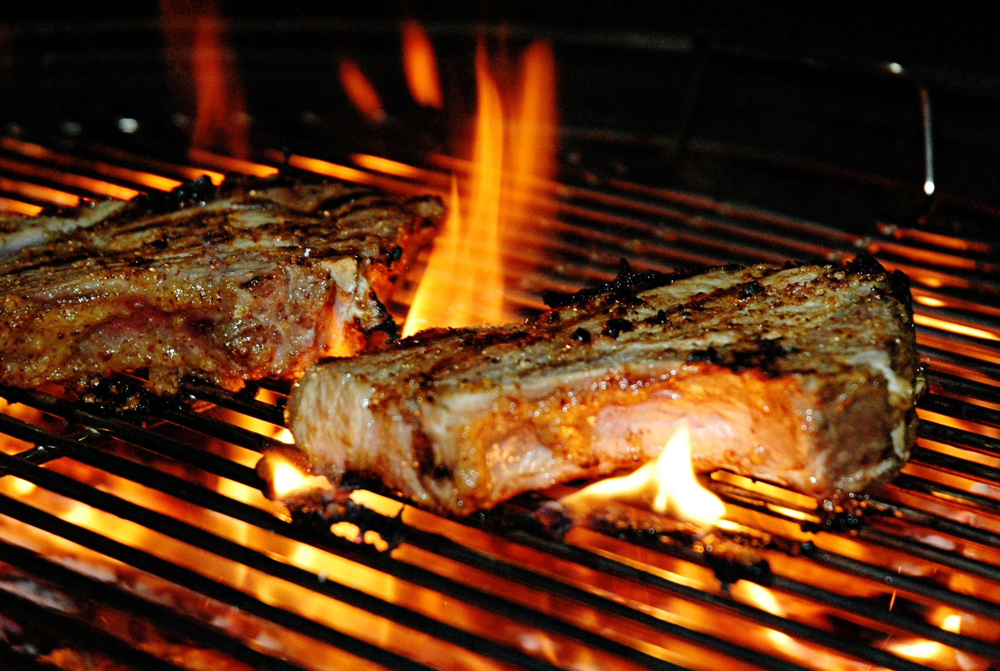
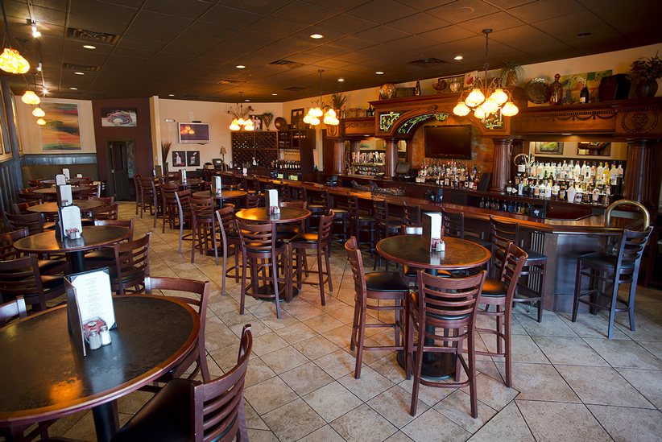
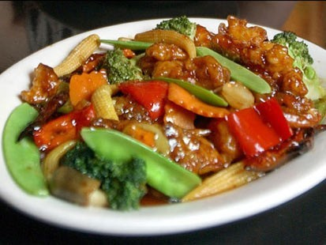
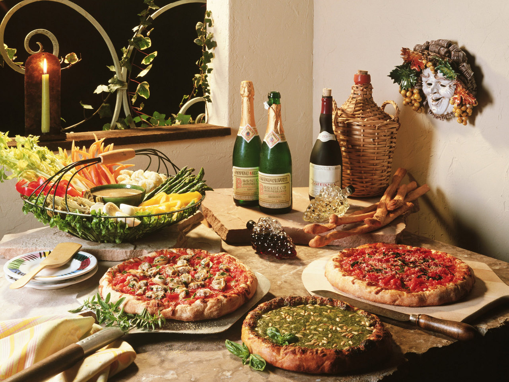

Introduction
Welcome to the Margaretville Online Food Delivery Service! This hub provides a helpful link to our
partner restaurants - places that have adopted our system of online ordering and delivery. Here you'll find inspiration for today's meals.
Our partners cover a wide variety of cuisines, from BBQ grill, to Chinese, to even French cuisine!
So do yourself a favour today! Stay home, leave the dishes where they are, and order through us today!
partner restaurants - places that have adopted our system of online ordering and delivery. Here you'll find inspiration for today's meals.
Our partners cover a wide variety of cuisines, from BBQ grill, to Chinese, to even French cuisine!
So do yourself a favour today! Stay home, leave the dishes where they are, and order through us today!
Example Cuisines
- BBQ - Grilled meat with possible marinades and light sides.
- Bistro - Simple yet enduring pub-style food, available everywhere.
 Burgers - Burgers in all sizes, styles and levels of sophistication.
Burgers - Burgers in all sizes, styles and levels of sophistication.- Chinese - From fried pork to grilled octopus, the first choice for deliveries everywhere.
- Italian - Pasta and gnocchi are available, but delivered, pizza will always come first